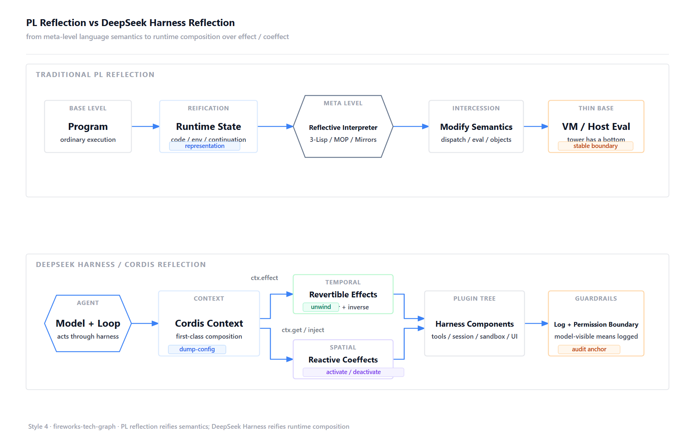
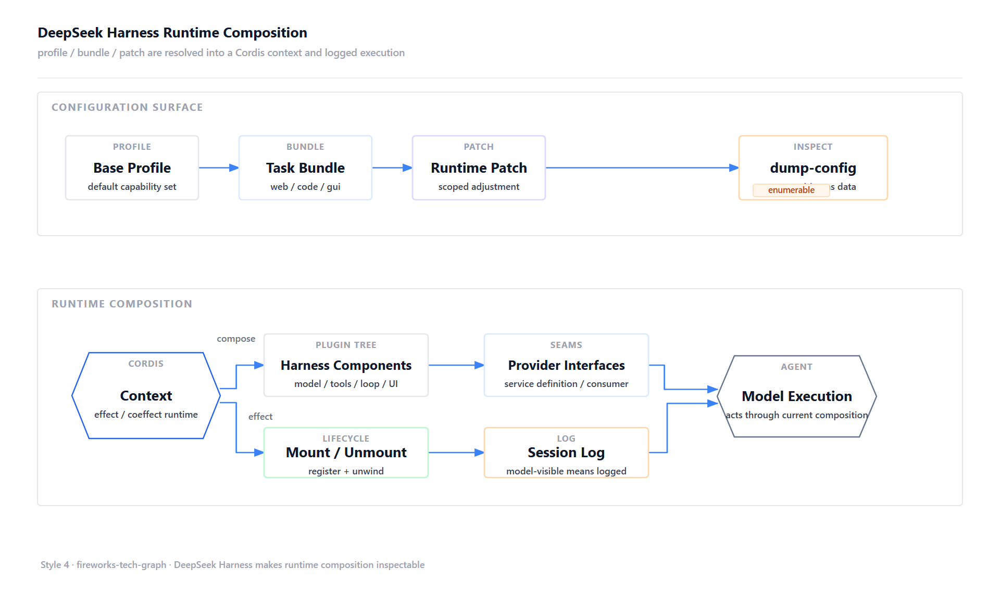
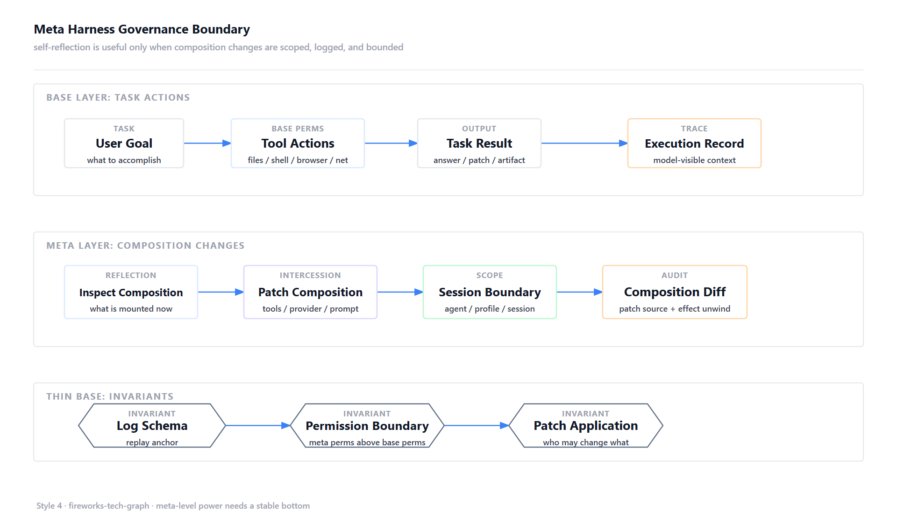

如果只从 Agent 框架看 DeepSeek Harness，很容易把它理解成一套插件化 runtime：模型、工具、skill、session、sandbox、loop、UI 都可以被替换。这个理解没有错，但还没有碰到它最有意思的地方。
真正值得讨论的，是 harness 能不能从一套固定基础设施，变成可以按任务临时组合的运行时对象。长程任务经常会走到这种时刻：当前上下文太宽，工具太泛，权限边界也不够贴合；继续让同一个 Agent 硬跑，成本和噪声都会上来。更自然的做法，是为这个问题临时组合一套更窄、更专门、可回收的运行时。
这件事听起来像 Agent 工程里的新问题，底层却接上了一条很老的 PL 线索：自反。
PL 里的自反传统
自反这个词，在程序语言里并不新鲜。
Brian Cantwell Smith 在 3-Lisp 和 procedural reflection 里讨论过一个核心问题：计算系统能否对自己的推理过程进行有效推理。要做到这一点，系统需要把自己的运行状态 reify 成某种可操作的表示。程序拿到这份表示之后，改写表示会影响后续行为。
这正是自反系统迷人的地方，也正是它危险的地方。系统开始处理自身，递归立刻出现：解释器之上还有解释器，meta 层之上还有 meta-meta 层。3-Lisp 用 reflective tower 描述这种结构。塔可以是懒的，但塔底必须存在。
Metaobject Protocol 走的是另一条更工程化的路。CLOS 的 MOP 把对象系统的部分语义开放出来：类、方法、继承、分派这些机制可以通过元对象被程序观察和定制。它的启发在于，灵活性需要协议。开放哪些语义、通过什么协议开放、哪些部分保持为稳定底座，这些问题比「能不能改」更重要。
后来 Mirrors 又强调了分层。Bracha 和 Ungar 提出 meta-level API 的三条设计原则：encapsulation、stratification、ontological correspondence。翻成 Agent runtime 的话，就是：元能力要封装实现细节，meta 层和 base 层要分开，元层看到的对象形态要和底层真实对象有清晰对应关系。
这些老概念放到今天看，几乎都能映射到 Agent harness。工具集合、prompt contributor、session log、sandbox policy、workflow engine、subagent provider，就是 Agent 的运行时语义。把这些东西藏在产品代码里，主 Agent 只能被动使用固定菜单。把它们变成可描述、可替换、可回滚的 composition，主 Agent 才可能为一个具体问题生成更贴合的 subagent harness。
论文里的动态组合问题
DeepSeek Harness 背后的 Cordis 论文，把自反问题进一步落到了动态组合。
论文题目是 A Programming Paradigm for Spatiotemporal Composability。它关心的是现代软件在运行中加载、卸载、替换组件时，如何拥有一套足够细的组合语义。它把动态组合拆成两条轴：时间轴和空间轴。
时间轴对应 temporal composability。一个组件离开系统时，它曾经造成的修改要能被完整撤销。注册过的 listener 要撤掉，提供过的 service 要撤掉，打开过的资源要关闭，注入过的能力要从 context 里消失。粗粒度的做法是重启进程，但 Agent harness 很难接受这种方式：任务可能正在跑，session 可能已经积累了状态，subagent 和工具调用也可能还在中途。
空间轴对应 spatial composability。组件之间的依赖要能被声明、解析，并在依赖变化时自动响应。A 提供 filesystem，B 依赖 filesystem；A 被替换或卸载时，B 不能继续拿着旧引用假装一切正常。它应该被通知、暂停、重载，或者在依赖重新满足后再激活。
论文借用了 PL 里的 effect 和 coeffect 来处理这两条轴。effect 描述程序如何改变环境。Cordis 把 effect 搬到 runtime：每次 context transformation 都要带一个 inverse，由 runtime 记录下来。这样组件卸载时，不需要作者额外维护一份拆卸脚本，runtime 可以按相反顺序 unwind。
coeffect 描述程序依赖什么环境。Cordis 同样把 coeffect 搬到 runtime：组件声明自己需要哪些 key，context 变化时，runtime 根据依赖是否满足，把这次变化分类为 activating、deactivating 或 neutral。组件何时启动、何时退出，由依赖满足关系驱动。
这就是论文里所谓的 spatiotemporal composability：时间上，变化可撤销；空间上，依赖可响应。两者统一到一个 context paradigm 里，组件通过 context 提供能力、读取依赖、注册副作用，runtime 负责追踪、恢复和重算依赖。
这套表达对长程 Agent 很关键。一个 subagent harness 可能只为当前问题存在：某些工具只在研究阶段打开，某些 skill 只服务于当前路径，某个 sandbox 只为这次实验存在，某个 workflow 只为当前问题收敛。没有 temporal composability，临时能力会留下残留状态；没有 spatial composability，临时替换会打断依赖图。元 harness 的工程基础，正好落在这两件事上。

从自反到元 Harness
传统 harness 更像预设舞台。模型站在台上，工具和权限已经摆好，loop 和日志系统在幕后工作。模型知道自己可以调用某些工具，但通常看不见这些工具来自哪里、作用域在哪里、能否被替换、替换后会影响哪些消费者。
元 harness 的问题意识更进一步：harness 自身能不能成为一等对象，并被主 Agent 用来生成临时 subagent。
这里的一等对象可以落到一个很具体的工作流。主 Agent 判断当前问题需要独立探索，于是选择模型、工具、skill、sandbox、workflow 和权限边界，生成一个临时 subagent harness。这个 subagent 带着更窄、更专门的能力去跑任务。任务结束后，相关注册、工具 schema、prompt section、service provider 都应该能干净退出；它看到过什么、用了什么 composition、发生过哪些 patch，也应该能回放。
所以元 harness 的核心价值，应当落在受控组合上：主 Agent 可以在边界内创建任务专用的能力容器。这个容器要可枚举、可局部修改、可撤销、可审计。它比普通工具调用更重，也比简单的 prompt injection 更有结构，因为它是一段有生命周期的 runtime composition。
DeepSeek Harness 在讨论什么
DeepSeek Harness 的核心口号是 Everything is a plugin。这个口号放在 PL 自反谱系里看，重点不在「插件」二字，重点在 composition 可以成为数据。
它基于 Cordis。Cordis 论文给这句话补了一层更硬的含义：插件是带有 effect 和 coeffect 的 runtime component。一个插件加载时，会改变 context，比如注册服务、添加工具、贡献 prompt section、监听事件、提供 sandbox 或 storage provider；这些变化都属于 effect。一个插件运行时，也依赖 context，比如它需要某个 LLM adapter、filesystem、subprocess、session persistence 或 UI surface；这些依赖都属于 coeffect。插件可以很多，前提是副作用能撤销，依赖能被 runtime 重新解析。
放到 subagent 场景里，DeepSeek Harness 对应的是一种很实际的能力：主 Agent 发现问题变长、变深、需要独立探索时，可以按任务捏出一个临时 harness，让 subagent 带着这套能力去跑。它把 model adapter、tool registry、session log、agent loop 等核心部分放进 Cordis plugin tree，又通过 profile、bundle、patch 叠加配置。dsh --profile web --dump-config 的意义超过了打印配置，它会把一次运行真正使用的 composition 摆到台面上。session log 也承担了更重的职责：model-visible means logged，进入模型请求的内容，必须能从日志中重建。

这里还要分清一个边界：dsh 并没有天然把完整 harness 像 skill 文本一样塞进 LLM context。它把 harness 变成可组合、可枚举的 runtime 对象；模型默认看到的是这套 runtime 的 model-facing 投影。
这个投影主要有几层。system prompt sections 由 ctx.systemPrompt.section() 注册，承载 harness identity、persona、tool guidance 等内容。tool schemas 由 ctx.tools 贡献，模型看到的是工具的 schema 和描述，背后的 Cordis plugin tree 仍然留在 runtime 层。dynamic prompt context 由 ctx.systemPrompt.context() 注册，适合把运行时状态以 durable user-role snapshot 的形式送进模型上下文。session log 则负责把进入模型请求的内容变成可重建的历史。
所以 dump-config、Creator mode 和 plugin tree 更像开发者或 creator 可以检查的 runtime 表示。它们可以帮助人或上层编排逻辑理解当前 composition，但不会自动等价为模型每一步都能读到的完整 harness 自述。真正进入 LLM context 的，是 system prompt、tool schema、dynamic context 和 session log 投影。这一点很重要：dsh 的价值在 runtime composition，重点不在给模型塞一大段 harness 说明书。
这也是 DeepSeek Harness 和普通插件系统的差别。普通插件系统通常关心扩展点，DeepSeek Harness 更关心扩展点进入 runtime 以后如何留下生命周期、依赖关系和审计痕迹。capability seam 被拆成 Service Definition、Provider、Consumer，也是在解决同一个问题：subagent 需要换搜索 provider、代码执行 provider 或 GUI provider 时，能力沿着接口迁移，避免每个工具各自长出一套远程分支。
从这个角度看，nanobot 的 skill 机制可以放进同一条线上理解。SKILL.md 把经验、流程、工具使用方式和局部约束沉淀成可复用文本，贴近 Agent 的日常工作方式。继续往下走，skill 可以从「写给模型看的操作手册」变成带有工具声明、权限要求、资源生命周期、作用域规则、评估样例和审计事件的能力单元。主 Agent 可以把相关 skill 挂到一个临时 subagent harness 里，让它带着更窄、更专门的能力跑完一段长任务。
组合之后的问题
runtime composition 一旦变成可修改对象，评测和排障都会变复杂。
固定 harness 下，我们常把模型当成主要变量；换模型做评测时，工具列表、prompt、workflow、sandbox 尽量固定，差异可以粗略归因到模型。subagent harness 变成可临时生成的对象之后，这个前提会变脆。两个 subagent 即使用同一个模型，也可能带着不同工具、不同 prompt contributor、不同 provider、不同权限策略。此时排障不能只看模型输出，还要看当时运行在什么 composition 上。
因此 composition history 也应该成为 session 级事件。仅记录 model-visible message 还不够；如果主 Agent 为某个任务生成了 subagent harness，还要记录 composition snapshot、diff、patch 来源、作用域、触发原因、effect unwind 结果和 coeffect re-resolution 结果。论文回答了变化如何可撤销、依赖如何可响应，DeepSeek Harness 回答了 Agent runtime 如何插件化；评测归因和变更账本仍然需要更完整的工程约定。

边界也会跟着上移。普通工具权限控制的是 base 层行为，比如读文件、写文件、跑命令、访问网络、打开浏览器。元 harness 还会出现 meta 层权限，比如为 subagent 修改工具集合、替换 provider、调整 sandbox policy、注册 prompt contributor、改变 workflow engine 或 agent loop。prompt injection 到了这一层，影响范围会从「这一步怎么做」扩展到「接下来要生成一个什么样的 subagent」。
这套思路最可能先落地在两类场景里。
一类是 managed agent。主 Agent 由平台托管，基础 loop、权限策略、模型路由和安全边界都不方便被用户或业务逻辑直接改。遇到一个特殊需求时，平台可以在受控范围内生成一套任务专用 harness：开放哪些工具、挂哪些 skill、给多大 sandbox、用什么 workflow，都由平台约束后临时组合出来。这样主 Agent 保持稳定，变化被限制在子运行时里。
另一类是长程任务拆分。复杂任务跑到中途，常常会分出研究、验证、GUI 操作、代码实验、资料整理等不同阶段。每个阶段需要的上下文和工具都不一样。此时把所有能力塞进同一个 Agent，只会让上下文变宽、工具选择变噪、失败归因变难。更好的方式是按阶段现捏 subagent harness：研究子任务有搜索和阅读能力，验证子任务有运行和测试能力，GUI 子任务有浏览器和视觉能力。每个子任务完成后交还结果和 trace，主 Agent 只负责调度、汇总和判断下一步。
这就是我理解的 DeepSeek Harness：它把 PL 社区讨论过的 reification、MOP、mirror、reflective tower、meta/base stratification 推到 Agent runtime 的现场。工具、日志、沙箱、工作流、子 Agent、UI、模型适配器，都进入同一套 composition 语言。未来的 Agent 产品会被多模型路由、任务型 workflow、GUI agent、长期记忆、组织权限、第三方 skill 和可审计执行推向动态组合。到那时，重要的问题会变成：主 Agent 能不能看见可用构件，能不能为长程任务生成合适的 subagent harness，能不能解释为什么这样组合，能不能在出事后回到某个可信状态。
最后还是想批评一下 DeepSeek 的表达方式。Cordis 论文和 DeepSeek Harness 的程序复现本来已经足够有价值：一个讲清楚动态组合的语义，一个给出可运行的 Agent runtime 形态。把这两件事摊开，工程同学自然能看懂它在解决什么问题。现在偏偏又包了一层偏 ToC 的产品叙事，页面、概念和入口都想雕花，但花还没有雕完整，反而让真正有意思的部分变得不够直接。对这类基础设施项目来说，论文、代码、最小可复现实验，可能比一套半成品产品包装更有说服力。